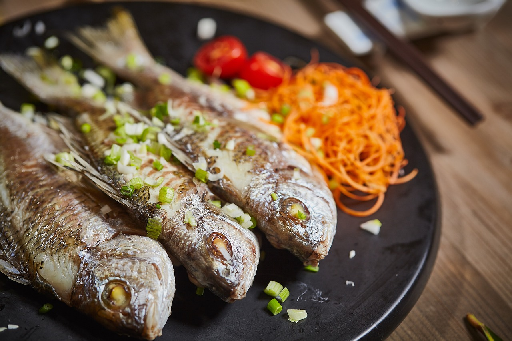

Bienvenue au Quai Antique
Bienvenue sur le site du restaurant gastronomique situé au coeur de la magnifique ville de Chambéry. Le chef Arnaud Michan vous invite à découvrir un voyage culinaire mémorable.

Le chef Arnaud Michant vous invite au
Bienvenue sur le site du restaurant gastronomique situé au coeur de la magnifique ville de Chambéry. Le chef Arnaud Michan vous invite à découvrir un voyage culinaire mémorable.

Découvrez la richesse des saveurs avec nos plats élaborés à partir de produits frais et de saison, ceuillis localement.
Vous pouvez directement réserver une table sur ce site ! Il suffit de cliquer sur le bouton ci-dessous.